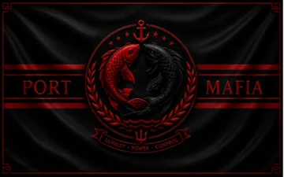

Bavaria
- Capital
- New Bavaria
- Role
- Finance & Central Administration
- Government
- Parliamentary Republic
- Established
- 2014
- Leader
- ROLEX5834
One World • Many Nations • Shared Prosperity. Founded in 2014, the Binod World is governed under a constitution, with a World President chosen by election.
Leaders are as listed in the government register (22 November 2026).

Member State Member State
Member State Member State
Member State Member State
Member State Newest Nation
Newest NationThe Unified Binod Calendar has 13 months of 28 days — a 364-day year — and runs only while the world is awake: during the Active Temporal Flow, 20:00 to 03:00 IST, at 20 real minutes per civil day. BIASR is its keeper.
The Founding Epoch is 23 April 2021, 20:00 IST — day 01 of Ardhan, Year 1.